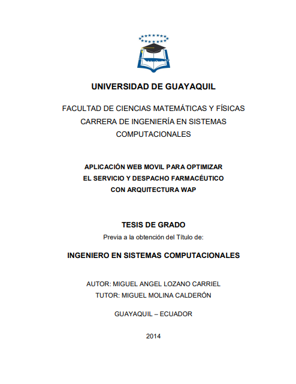
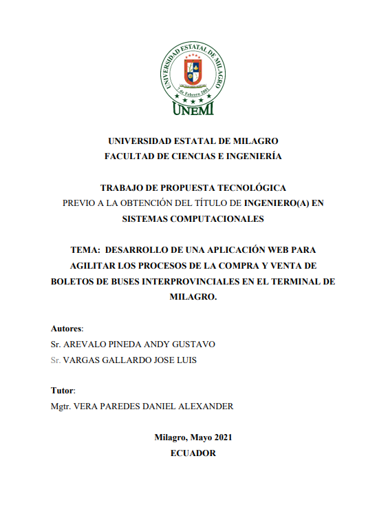
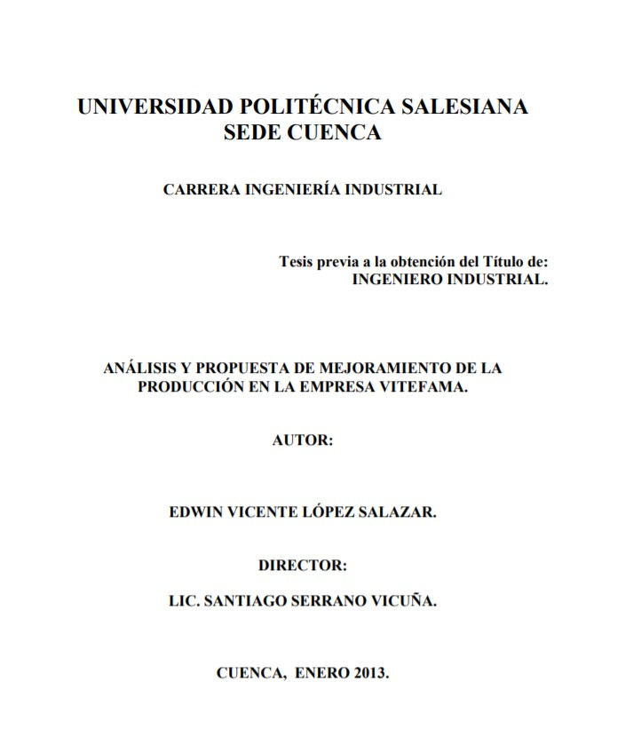
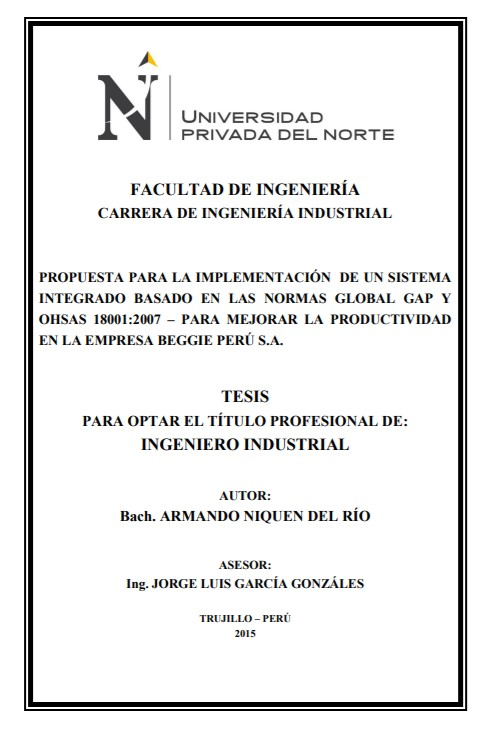
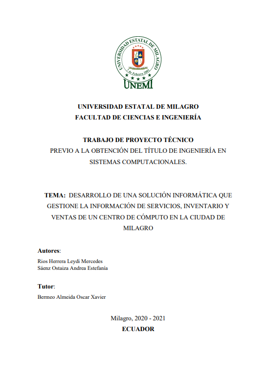
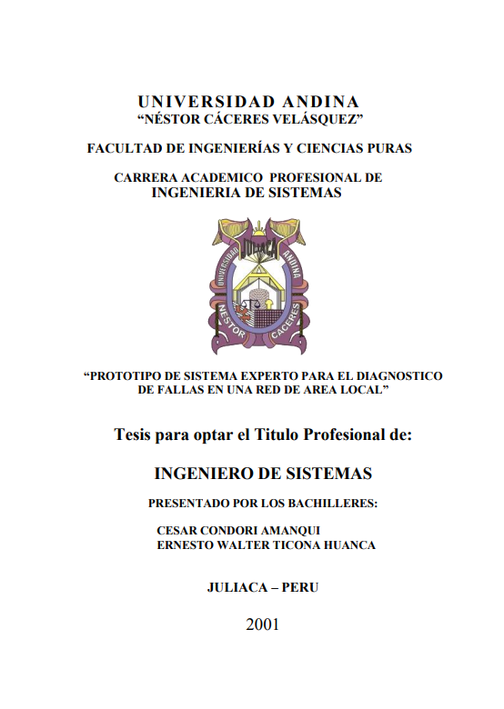
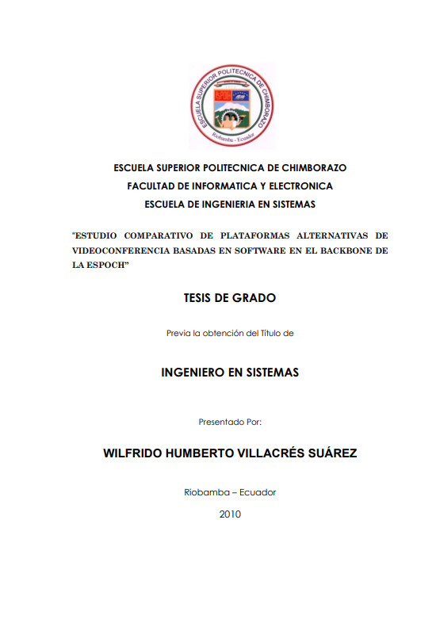

Aplicación web movil para optimizar el servicio y despacho farmacéutico con
arquitectura WAP
Autor: Miguel Angel Lozano Carriel
 Descripción:
Descripción:
El presente trabajo trata sobre Los Pedios en Línea que se pueden realizar con cualquier Dispositivo Móvil que cuente con un navegador para la web. El objetivo del mismo es aprovechar el internet desde un computador personal (PC) como desde cualquier dispositivo móvil con navegador web para realizar pedidos en línea a las farmacias populares del sector sur de Guayaquil. Los métodos y técnicas aplicados fueron entre otros los cuestionarios y algunos estadísticos, así como los propios del nivel teórico. Se propone elaborar además un ambiente web para usuarios como también para Administradores de los negocios farmacéuticos, dicho ambiente se presentará de acuerdo al rol que presente el usuario que se registra a la aplicación web.

Desarrollo de una aplicación web para agilizar los procesos de la compra y
venta de boletos de buses interprovinciales en el terminal de milagro.
Autor: Sr. Arevalo Pineda Andy Gustavo | Sr. Vargas Gallardo Jose
Luis
Descripción:
En el presente proyecto se ha creado un sistema web para la compra y venta de boletos del terminal terrestre del cantón Milagro con ello se pretende agilitar los procesos de compra en cuanto a boletería sin tener contacto físico ni directo en ventanilla para poner en marcha dicho proyecto fue necesario realizar una entrevista con los socios del terminal terrestre para saber cuáles son sus necesidades y principales requisitos que deseen se incorpore en el sistema a crear y así se llegó a saber todos los requisitos funcionales y no funcionales que el sistema tendrá luego de haber obtenido toda la información se procedió a pensar en que metodología seria la que mejor opción para realizar el sistema y es así que se llegó a la conclusión que la mejor metodología sería la de scrum scrum asume que solo cuando la entrada está perfectamente definida.

Análisis y propuesta de mejoramiento de la producción en la empresa
Vitefama
Autor: Edwin Vicente López Salazar
Descripción:
Son variados y similares los enfoques que con respecto al proceso de planificación, programación y control de la producción y control de la producción han sido tratados en términos generales, que se inicia con las previsiones de las cuales se desprenden los planes a largo, mediano y corto plazo. Este presenta algunas falencias ya que carece del concepto integrador que en el sentido horizontal debe relacionarse con los demás subsistemas de la organización.

Propuesta Para La Implementación De Un Sistema Integrado Basado En Las Normas
Global Gap Y Ohsas 18001:2007 – Para Mejorar La Productividad En La Empresa Beggie Perú
S.A
Autor: Armando Niquen Del Río
Descripción:
La identificación de peligros y evaluación de los riesgos de seguridad y salud ocupacional permitieron obtener información sistemática, completa y oportuna sobre incidentes y/o accidentes, enfermedades ocupacionales ocurridas en las instalaciones de la empresa Beggie Perú, con la finalidad de tomar acciones correctivas y prevenir la recurrencia de estos. La implementación de un Plan |de Respuesta a Emergencias nos permite contar con una organización debidamente preparada y orientada a la prevención y protección de los trabajadores, contratistas, clientes y visitantes de la Empresa Beggie Perú S.A.

Desarrollo de una solución informática que gestione la información de
servicios, inventario y ventas de un centro de cómputo en la ciudad de
milagro
Autor: Rios Herrera Leydi Mercedes | Sáenz Ostaiza Andrea Estefanía
Descripción:
Como meta principal de este proyecto técnico se desarrolló un sistema que integre todos los procesos de los departamentos dentro de un centro de servicio técnico para que lleve la gestión de adquisición servicios inventario y venta de productos en la ciudad de milagro para poder garantizar el cumplimiento pleno de estos procesos y facilitar los trabajos del empleado frente al cliente se aplicó el modelo de software de programación extrema xp el cual ayudó mucho para el reconocimiento de los requerimientos para la realización de la arquitectura del sistema se construyó los casos de uso respectivos de cada empleado de diferentes cargos y los diagramas de flujos de datos que a su vez ayudaron a comprender lo que el sistema ofrece posteriormente se procedió a construir la base de datos en sql server.

Prototipo de Sistema Experto para el diagnóstico de fallas en una red de área
local
Autor: Cesar Condori Amanqui | Ernesto Walter Ticona Huanca
Descripción:
La información hoy en día es tan importante en todas las organizaciones y las redes LAN permiten compartir información y recursos entre todos los usuarios, por ello es necesario desarrollar un software sistema experto que ayude a solucionar las fallas de una red LAN. Este proyecto de tesis, denominado “PROTOTIPO DE SISTEMA EXPERTO PARA EL DIAGNOSTICO DE FALLAS DE UNA RED DE AREA LOCAL”. Diagnóstica las fallas de hardware de conectividad, fallas de hardware de interfaz, fallas de software de comunicaciones y fallas de usuario, y de acuerdo con el tipo de fallo encontrado el sistema experto nos mostrara una solución.

Estudio comparativo de plataformas alternativas de videoconferencia basadas
en software en el backbone de la ESPOCH
Autor: Wilfrido Humberto Villacrés Suárez
Descripción:
La ESPOCH cuenta con equipos de videoconferencia multipunto híbrido basado en hardware, ubicado en DESITEL, el mismo que tiene que ser trasladado a cada lugar que se requiera una sesión de video conferencia, lo que se pretende con esta investigación es incrementar la disponibilidad de puntos de conexión de videoconferencia.